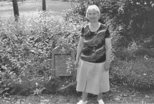
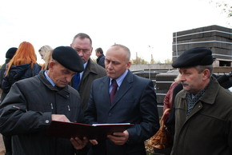
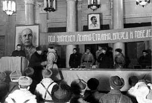

ноябрь 2009 года
Я ОБЯЗАТЕЛЬНО ВЕРНУСЬ!
Письмо в редакцию
Мой отец ВАСИЛЕВСКИЙ Антон Иванович не вернулся с войны, и все послевоенные десятилетия считался пропавшим без вести. В июне этого года я узнала, что в Твери работает фонд «Жить и Помнить». Была передача местного радио, в которой был назван телефон этого Фонда. В тот же день я позвонила по названному телефону и обратилась с вопросом о судьбе отца к сотруднику Фонда А.М.Терентьеву.
К своему удивлению, я узнала, что мой отец погиб в плену и похоронен в Германии. Я приехала в Фонд и выразила желание поехать на могилу отца. Отец уходил на войну, когда мне было 3 года. Прошла целая жизнь! И вот я начала оформлять документы для поездки.
20-го июля я выехала из Москвы, прибыв на польскую границу 21-го, а виза у меня была открыта с 22-го. Поэтому по требованию польских пограничников была вынуждена вернуться снова в г. Брест. Так что в г. Билефельде я оказалась только утром 23 июля и меня уже никто не встречал. Взяла такси и поехала в г. Шлосс, где находится кладбище военнопленных, погибших в лагере VI K Форелькруг - Зенне. Немецкого языка я не знаю, поэтому самостоятельно кладбища отыскать не смогла, и таксист отвез меня в полицию. Было раннее утро. Еще никто не работал. Потом пришла женщина-полицейская, я показала ей свой лист с данными о моем отце и кладбище, на котором он захоронен. Женщина позвонила, и приехал Петер Мюллер, руководитель документационного центра по лагерю военнопленных. Он провез меня на территорию, где находится документационный центр.
Там работают 4 человека. На столах компьютеры, есть ксерокс. На стене благодарность президента В.В. Путина за 2000 г.
Петер Мюллер отвез меня на кладбище. Все выглядит ухоженным и аккуратным. Зеленая трава покрывает захоронения, рядами посажены деревья. Установлен памятник погибшим.
Петер организовал чаепитие, принес много бутербродов. Оставшиеся бутерброды бережно упаковал мне в дорогу.
Виза моя заканчивалась и 24-го я должна была покинуть Германию. Сотрудники центра организовали мне экскурсию по г. Билефельд. В поездке меня сопровождала Елена Никитина, которая уже десять лет живет в Германии. Она работает в доме для престарелых. Очень радушная, гостеприимная, добрая женщина. После обеда в доме Елены, Петер показал мне одну из местных достопримечательностей - старинный замок на реке Липе. А в 1 час ночи шел поезд в Москву. Меня привезли на вокзал и посадили на поезд. И вот я дома.
В силу обстоятельств моя первая поездка на могилу отца оказалась очень короткой. Но я дала себе слово, что в следующем году обязательно опять поеду к нему.
Людмила Василевская
|

МЕМОРИАЛ НА СМОЛЕНСКОМ
В Твери полным ходом продолжаются работы по сооружению нового воинского мемориального комплекса на месте бывшего Смоленского кладбища. Это один из наиболее значимых проектов по подготовке города к 65-й годовщине Победы в Великой Отечественной войне.
Мемориал будет возведен из мрамора и гранита. На плитах будут высечены имена захороненных здесь бойцов и командиров Красной Армии, партизан и подпольщиков, погибших в боях за Калинин, умерших в годы войны от ран и болезней в госпиталях, находившихся в нашем городе. Планируется также увековечить названия воинских частей и других формирований, которые принимали участие в обороне и освобождении Калинина. Все основные строительные работы планируется закончить к зиме, а потом уже начать благоустройство мемориала. Его открытие будет проведено в дни празднования юбилейного Дня Победы.
Но, пожалуй, главное, что предстоит сделать при возведении мемориала, — восстановить полные данные обо всех, кто здесь захоронен. По учету Министерства Обороны это воинское захоронение имеет номер 69-603. В двух братских могилах согласно приложению к паспорту воинского захоронения числятся захороненными 223 человека, из них 31 партизан и подпольщик.
В начале октября в Фонд «Жить и Помнить» пришло письмо от заместителя Председателя Тверской Городской Думы С.Н.Рогозина с просьбой проверить сведения о захороненных. Приступив к этой ответственной работе, проверив около двадцати имен, мы сразу же убедились, что такая проверка просто необходима.
В списках захороненных, которые будут являться первоисточником для увековечения имен погибших на мемориале, очень много ошибок в написании фамилий, у некоторых отсутствуют данные о годе рождения, дате гибели, воинском звании. Так, например, подполковник АНАНЬИН М.М. внесен в списки без воинского звания, рядовой БЕЛОВ Николай Федорович на самом деле оказался Николаем Федотовичем, рядовой БОТОГОНОВ Е.П. сейчас увековечен как БАТАГОНОВ Е.П., рядовой БОРОНИН В.А. - как БАРАНИН В.А., сержант ШАЛАХОВ К.М. в действительности был сержантом ШАЛАШОВЫМ К.М., что в данном случае подтверждается записью в донесении о безвозвратных потерях 16 гв. сд и записью в Книге Памяти Нижегородской области. Обратившись в Совет Фонда поисковых отрядов Республики Башкортостан выяснили, что их земляк рядовой АХИЯРОВ Хаматнур Ахиярович захоронен как АХЛЯРОВ Ахматур. Проверяя госпитальные книги учета умерших, мы стали находить имена воинов, которые не учтены захороненными ни на одном Тверском воинском мемориале.
Завершить проверку предстоит к 1 февраля следующего года. Свою помощь в данной работе нам оказывают депутаты и сотрудники Тверской городской Думы, где создана рабочая группа в составе пяти человек. Глава Твери Владимир Бабичев побывал на месте реконструкции Смоленского захоронения. По его словам, на эти работы выделены значительные средства - 12 миллионов рублей из городского бюджета и 8 -из областного.
Осознавая объём предстоящих архивных исследований, свою ответственность за их конечный результат мы рассчитываем на помощь органов власти и жителей города. Обращаемся ко всем, кому известны захороненные в годы войны на Смоленском кладбище, с просьбой сообщить нам сведения об этих людях. По учетным данным на кладбище захоронены десять неизвестных. Надеемся с вашей помощью установить и их имена. |
ПАМЯТНЫЕ ДАТЫ ОКТЯБРЯ
КАЛИНИНСКИЙ ФРОНТ.
Калининский фронт был образован 19 октября 1941 г. на западном направлении советско-германского фронта на основании директивы Ставки ВГК от 17 октября 1941 г. из войск правого фланга Западного фронта (22, 29, 30-я и 31-я армии), прикрывавших Москву с северо-запада. В дальнейшем в состав Калининского фронта входили 3-я и 4-я ударные, 20, 31, 39, 41, 43-я и 58-я армии, 3-я воздушная армия.
10 октября —4 декабря 1941 г. войска фронта провели Калининскую оборонительную операцию, которая являлась составной частью Московской стратегической оборонительной операции (30 сентября — 5 декабря 1941 г.) В период наступления под Москвой (5 декабря 1941 г. — 20 апреля 1942 г.) они провели Калининскую операцию (5 декабря 1941 г. — 7 января 1942 г.), освободили Калинин (16 декабря).
В Ржевско-Вяземской операции (8 января —20апреля 1942 г.), проведенной вместе с Западным фронтом, войска Калининского фронта вышли в тыл ржевско-сычевской группировки противника.
С 22 января 1942 г. войска правого крыла фронта участвовали в проведении Торопецко-Холмской операции (9 января —6 февраля 1942 г.).
В Ржевско-Сычевской операции (30 июля — 23 августа 1942 г.) войска левого крыла фронта прорвали заранее подготовленную глубоко эшелонированную оборону противника под Ржевом. В ходе дальнейшего наступления они ликвидировали плацдарм противника на левом берегу Волги в районе Ржева и совместно с войсками правого крыла Западного фронта сковали крупные силы немецкой группы армий «Центр», сорвав тем самым переброску ее войск под Сталинград.
В ходе Великолукской операции (24 ноября 1942 г. —20января 1943 г.) войска фронта прорвали оборону противника и освободили Великие Луки (17 января).
В Ржевско-Вяземской операции 1943 г. войска фронта вместе с войсками Западного фронта продвинулись на 130-160 км, освободили города Ржев (3 марта), Белый (10 марта).
Участвуя в Смоленской операции 1943 г. (7 августа — 2 октября), войска Калининского фронта 14 сентября — 2 октября провели Духовщинско-Демидовскую операцию, в результате которой освободили Духовщину (19 сентября), Демидов (22 сентября), Рудню (29 сентября).
В ходе Невельской операции (6-10 октября 1943 г.) войска фронта освободили Невель (6 октября) и в октябре вышли к восточным границам Белоруссии.
20 октября 1943 г. на основании приказа Ставки ВГК от 16 октября 1943 г. Калининский фронт переименован в 1-й Прибалтийский фронт.
Командующие фронтом: генерал-полковник Конев И. С. (октябрь 1941 г.— август 1942г.); генерал-лейтенант, с ноября 1942 г. — генерал-полковник Пуркаев М. А. (август 1942 г. — апрель 1943 г.); генерал-полковник, с августа 1943 г. — генерал армии Еременко А. И. (апрель — октябрь 1943 г.)
|
РАЗЫСКИВАЕМ РОДСТВЕННИКОВ!
Поисковиками Псковской области подняты останки воинов Красной Армии, уроженцев Калининской области:
красноармейца ИВАНОВА Алексея Антоновича, 1912 г.р, дер. Захарово Кашинского района. Призван Кашинским РВК, 257 стрелковая дивизия. Пропал без вести 12.02.1942г. Жена Иванова Александра;
красноармейца КРЫЛОВА Гаврила Петровича, 1902 г.р., дер. Золотилово Калининского района. Призван Кимрским РВК, 257 стрелковая дивизия. Пропал без вести 12.02.1942г. Жена Крылова Пелагея Ивановна проживала: г. Кимры, ул. К.Маркса, 31;
красноармейца ЯЗЕВА Василия Николаевича, 1904 г.р., дер. Савичево Молоковского района. Призван Молоковским РВК, 257 стрелковая дивизия. Убит в бою 11.02.1942г., тело с поля боя не вынесено. Жена Язева М.А.
Останки воинов будут перезахоронены в братскую могилу в деревне Подберезье Локнянского района Псковской области.
Просим отозваться всех, кто знает родственников этих людей и позвонить нам. Телефоны для связи: 8-4822-35-70-18, 8-4822-35-98-43. |
|
|